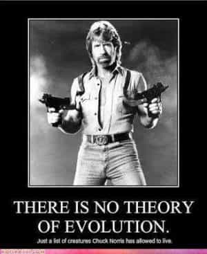

Obadiah Austin is a Texan in exile. He used to write about MMA, pro-wrestling and movies. He then actually tried MMA and making movies (and had more success in the former).


Chuck Norris is worthy of every man’s respect. But you wouldn’t know that watching any mainstream media today. These days, he is more an object of playful sneering at best (look at any of the “Chuck Norris Facts”) and condescending dismissal at worst (mention his name to any leftist film nerd).

This cultural snubbing is partially understandable. He’s a practitioner of a martial art considered lame (Tae Kwon Do), his film and television output—his main claim to fame—was of varying quality with his good product (Lone Wolf McQuade and Code Of Silence) vastly outweighed by the bad (his entire 1990’s catalog). Worse yet, his late career embrace of Evangelical Christianity and vocal participation in conservative politics guaranteed him a potential place of scorn with the leftist cultural overlords.
Now, he seems to be a quaint artifact from a bygone era (Karate magazines of the 70s and action movies of the 80s), relegated to late night television infomercials (Total Gym), and Walker, Texas Ranger re-runs on some obscure digital sub-channel. When he does make a “mainstream” appearance in movies or television, he’s practically the physical embodiment of a punchline (see Dodgeball or The Expendables 2).

Chuck Norris in Dodgeball
Usually, if an actor or performer embraces anything right of extreme left-wing politics, there are either immediate professional repercussions (witness the cowardice of singers dropping out of Donald Trump’s inauguration festivities) or long term smearing of legacies (demeaning John Wayne as a draft dodger, Walt Disney as an anti-Semite etc.). However, fellow Hollywood Republicans (and 80s icons) like Sylvester Stallone, Arnold Schwarzenegger and Bruce Willis have enjoyed lengthy careers. Even strong Catholic Mel Gibson seems to have weathered the storm.
So what’s up with Chuck? Why is he the object of cultural derision?
Norris’ first claim to fame was in the martial arts world. With an impressive Karate tournament record and being one of the few in the Hollywood area to actually know an Asian martial art got him a nice gig as a trainer to the stars (like Steve McQueen). Since martial arts was a small niche community at the time, he, along with others like a recent Chinese immigrant named Bruce Lee, trained together and even took bit roles in movies (both participated in 1968 spy parody The Wrecking Crew) to take falls for actors way below their skill level (Dean Martin). When Lee returned to Hong Kong to make movies he called on Norris to fight him in a now classic climax in Way of the Dragon.
Bruce Vs Chuck in Way Of The Dragon
It was exotic to know Karate (Norris actually specialized in the Korean art of Tang Soo Do, a relative of Tae Kwon Do) in 1960s and 1970s. It isn’t anymore. With McDojo’s in countless shopping centers across America and the rise in popularity of MMA, martial arts have been demystified. In UFC, Karate practitioners (such as Norris contemporary Ron Van Clief) were dispatched with ease. Celebrities now learn Brazilian Jiu-Jitsu from MMA veterans like Bas Rutten. Having a black belt in Karate or Tae Kwon Do carries little prestige in America today.
But that wasn’t the case in the 1970s. After the death of Lee, martial arts and martial arts movies became a hot commodity which led to the next phase of Norris’ career and add another layer of mockery.
Norris started in the low budget realm of American independents. Due to the grindhouse success of Kung Fu films and an increased interest in martial arts, film companies tried to capitalize on it with homegrown product. Who better than the American who fought Bruce Lee himself onscreen?
However, the US product lacked the kinetics and cultural cache of its Asian counterparts. Whereas Chinese and Japanese film companies allocated their biggest budgets and best talents behind martial arts fare, Hollywood initially relegated it to the ghetto (literally and figuratively). Similar to other indie-centric genres (horror and porn), novelty, was really the only appeal of American “Karate movies” like Norris’. But his movies had a good return on investment.
As the market demand for Kung Fu flicks transitioned to television, Norris was able to transition to more straight-ahead action fare that would make Stallone and Schwarzenegger household names. But instead of doing it for mainstream studios like Fox or Paramount, he signed on with a notorious mega-indie which would not help his career reputation.
Though moderately successful in the 1980s, Cannon Pictures is more grossly ridiculed today (see the documentary Electric Boogaloo: The Wild, Untold Story of Cannon Films). Ran by Israeli transplants Menaham Golan and Yoram Globus, they are considered as purveyors of schlock, embodying all the negatives of 80s cheese: cheap action thrills featuring Karate, American Ninjas and hysterical Arab villains, all against a backdrop of shrill ‘Murica jingoism. This image is not 100% accurate but to every myth there is some truth and Cannon did emphasize quantity over quality for the most part.
Cannon owners Menahem Golan and Yoram Globus
Norris, being their marquee star (along with the other “Chuck”—Charles Bronson) found his career reputation suffer with the negative fortunes of his cinematic benefactors (Cannon filed for bankruptcy; a victim of the junk bond investment schemes of the era). Unlike Bronson, who had a couple decades worth of cinematic goodwill before basically ending his career with Cannon, Norris’ main body of work was with the studio. While sneering at Bronson’s endless cycle of Death Wish sequels, critics could recall the classics he was a part of (The Magnificent Seven, The Dirty Dozen, the original Death Wish etc.). They experienced no recall with Norris. So they just laughed at Missing In Action, Invasion U.S.A. and Delta Force.
And they probably laughed when Cannon shut down. Unfortunately for Norris, the studio had planned to produce his debut television effort but had to drop out. However, he had enough popularity that CBS agreed to produce his show (networks usually didn’t directly produce shows at the time), which became the cherry on top for professional disdain.
Chuck as Walker
Every element of the show embodied cheese: the acting, the writing, the editing and of course it’s-so-bad-it’s-good theme song. Produced in Dallas—removed from the production center of Hollywood—Walker, Texas Ranger was a lynchpin in that purgatory of network program schedules: Saturday night primetime.
If that wasn’t bad enough, a few years after the show started, Norris converted to Evangelical Christianity and didn’t shy away from presenting those beliefs on the program. This of course would not endear him to the cultural elites residing in the parenthesis states nor do anything to help ensure his legacy in “official” histories in the annals of Hollywood. His tepid movie output of movies that went straight to video, only seemed to confirm this dismissal.
Though now an object of jest, those poking fun at him do so out of at least mild admiration than any outright hateful motivation. Norris himself is very likable both onscreen and in person. Behind our laughter might be a disguised admiration. Why? Chuck Norris is a self-made man. Really, he embodies the Kaizen ideals of continual self-improvement without regard to the good opinion of others (the elite). He seems comfortable in his own skin, no regrets or insecurities about his career. Better yet, his personal and professional life go against the grain of everything liberals hold dear—mainly victimhood and sucking up to elites. Let’s consider his career in reverse:
Walker, Texas Ranger, though pedestrian, was a safe space of sorts for Middle America. Families, home on a Saturday night, desperate for entertainment that would not attack their values found said entertainment in Walker. It’s easy to laugh at the innocence of it all but in a way, it was a continuation of the cinematic tradition of actors like Roy Rogers: Simple fare, with clear cut heroes and villains, giving boys action and adventure without having to face grim reality.
Growing up, Norris admired Rogers and John Wayne—icons to a generation of kids—and wanted to continue their legacy. He succeeded in a way. The show was a solid performer and wasn’t intended to be a critical darling. So, when some sneer at Chuck, could it be they are degenerate and don’t understand that one does not have to kowtow to critics to make a living?
Though Cannon—with its easy to lampoon immigrant ownership—definitely produced some bottom-of-the-barrel entertainment, people forget that ALL movie studios are guilty of the same thing. Cannon is easy to laugh at because they are out of business—there’s no fear of repercussions. Their action movies were puerile entertainment with adult thrills. I would choose to watch a Cannon movie over today’s supposed “mature” product with puerile characters, stories and preachy leftist messaging.
Cannon was honest entertainment. Those who grew up in the 80s (myself included) look back on the era with fondness—the apex of the home video era. When I went to the rental store, it was usually Cannon product I was begging my parents to bring home.
Fixtures of every neighborhood video rental store
And Chuck Norris was at the center of this. Adding to the leftist hostility, Norris’ Cannon movies, with their strong anti-Communist message, were widely distributed via the black market behind the Iron Curtain. As noted in the documentary, Chuck Norris vs Communism, these movies acted as propaganda to help topple socialist dictatorships. Yes, Chuck Norris helped defeat Communism! So when some sneer at Chuck, could it be he helped destroyed their leftist fantasies?
But most importantly, Chuck Norris represents a masculine ideal that is expressed through martial arts. Yes, Karate and Tae Kwon Do might not work best in a street fight but neither does Brazilian Jiu-Jitsu (you don’t want to be on your back on the street). In actuality, along with MMA, Boxing and Greco-Roman Wrestling, they are combat sports with skills that can be appropriated for real life encounters.
And Norris excelled at his respective sport. He learned it in Korea, where the training is more rigorous, with emphasis placed on the mental and spiritual just as much as the physical. He’s the first westerner to receive an 8th degree black belt in Tae Kwon Do—a feat that required a lot discipline and self-mastery. And self-discipline is a skill many men are lacking in this modern world.
Looking good in old age
And he did this coming from a background of extreme poverty. Growing up in Oklahoma, he spent his teenage years helping his single mother raise his siblings. So, up from poverty to become a martial arts champion and then a rich movie star; truly an American success story. So maybe when some sneer at Chuck, could it be out of insecurity and weakness?
But all this makes him persona non grata in Hollywood. He didn’t beg for handouts, he built himself up, all the while actively participating in movies that literally destroyed leftist shibboleths. In the case of Norris, his “work”—movies and television shows—aren’t as important as the force of personality making them. His creative output isn’t as strong as his contemporaries but it’s really a moot point.
Just as men don’t need approval from the feminist left, Norris’ fans don’t need any cultural stamp of “approval.” Chuck Norris is a symbol of what men should aspire to be: Physically and mentally tough as well as self-reliant. He did things his way.
Read More: 4 Reasons Why We Should Praise The Dallas Cowboys Cheerleaders